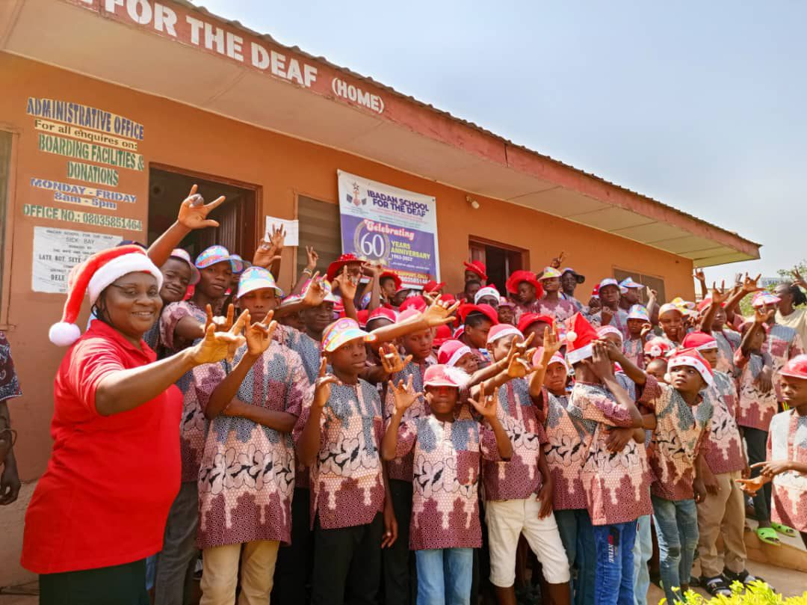

60th Anniversary Celebrations: 60 Hearty Cheers to Ibadan School for the Deaf
Read the Chairman’s Opening Speech by Rev (Dr) M. A. Awe and the Address by the Matron, Mrs Temitope Adewole-Oyesola, reflecting on six decades of pioneering deaf education, alumni achievements, and campus needs.
Read More →